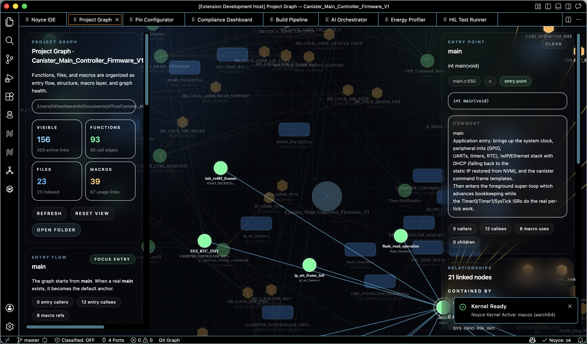
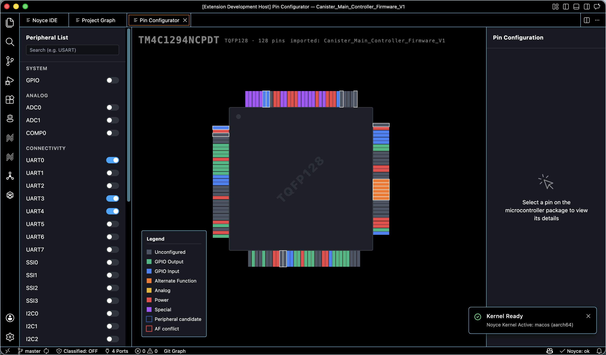
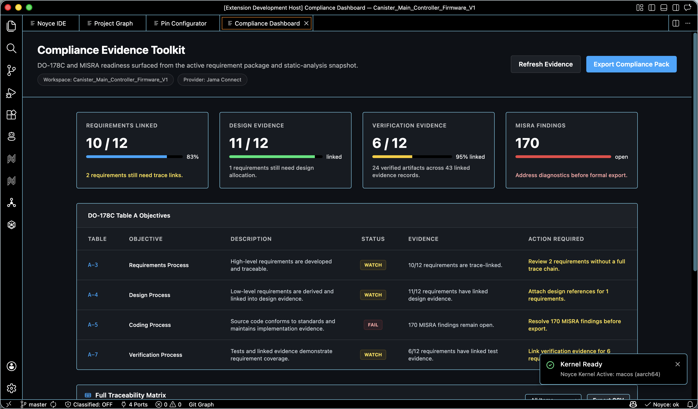
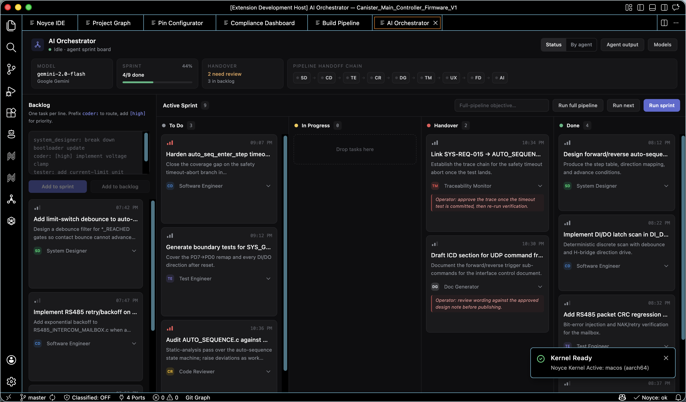

AI
Context-aware AI
Agents read workspace structure, active files, build state, and embedded project metadata before suggesting changes.
A local-first AI-native IDE for systems engineers who need agents, terminals, project intelligence, and real firmware workflows in one fast workspace.

The next release moves Noyce from prototype to launch-ready engineering workbench: Code-OSS shell, release packaging, native sidecar, richer project intelligence, and updated screenshots from a real firmware project.
Faster startup path, embedded Code-OSS packaging, improved TIVA project detection, AI orchestration views, compliance surfaces, and production release docs.
Noyce is not a generic chat sidebar. It is an IDE surface for code generation, semantic project indexing, local execution, compliance, debugging, and agent-assisted firmware work.
Agents read workspace structure, active files, build state, and embedded project metadata before suggesting changes.
Designer, coder, tester, reviewer, and documentation agents coordinate staged engineering tasks.
Run build, test, scan, and firmware commands without leaving the workspace context.
Function graphs, macro usage, file relationships, and call edges become navigable IDE context.
Native sidecar, filesystem IO, project scans, hardware views, and offline-first architecture.
Code-OSS extension model with Noyce-specific hardware, compliance, telemetry, and AI surfaces.
A compact simulation of the Noyce flow: index a firmware repo, ask the agent for a change, run the build, and preserve the reasoning trail.
// Noyce agent plan workspace: Canister_Main_Controller_Firmware_V1 entry: main.c:550 detected: TM4C1294NCPDT · CCS project · 93 functions $ noyce graph focus main visible nodes: 156 active links: 309 $ make -j4 compile CANISTER_CONTROLLER_INIT.c compile RS485_PACKETS.c link firmware.out build passed
Noyce combines a Code-OSS workbench with a native runtime and agent orchestration layer. The result is fast, inspectable, and privacy-conscious by default.
Captured from the v1.0.5 Noyce workbench running `Canister_Main_Controller_Firmware_V1` from the local office workspace.



Cursor, Windsurf, Replit, and VS Code are excellent tools. Noyce focuses on a narrower lane: terminal-heavy local systems development with agentic workflows and embedded project intelligence.
| Capability | Noyce | Cursor | Windsurf | VS Code | Replit |
|---|---|---|---|---|---|
| Local-first runtime | Strong | Partial | Partial | Strong | Cloud-first |
| Terminal-native workflow | Core | Yes | Yes | Yes | Hosted |
| Agent workflows | Multi-agent | AI coding | AI coding | Extensions | Cloud agents |
| Embedded project intelligence | Native focus | General | General | Extensions | General |
| Privacy/offline posture | Local bias | Model dependent | Model dependent | Local | Cloud |
Use the launch as a credible developer story: GitHub release, demo video, README visuals, Product Hunt imagery, and a short technical roadmap.
“The project graph makes firmware review feel less like archaeology and more like navigation.”
Embedded systems lead
“Noyce is strongest when it treats the terminal as the source of truth and agents as operators.”
AI tooling engineer
“This is the right direction for local-first engineering environments.”
Terminal power user